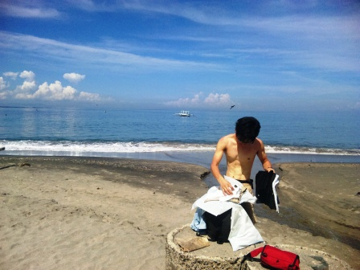
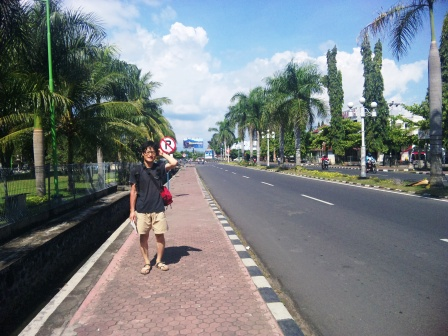
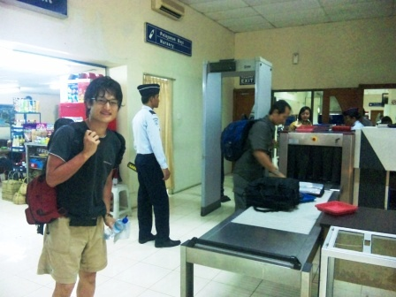
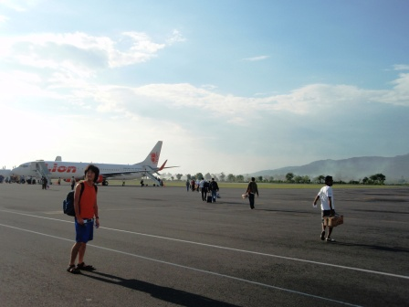
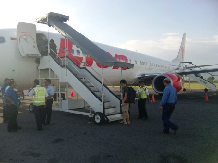
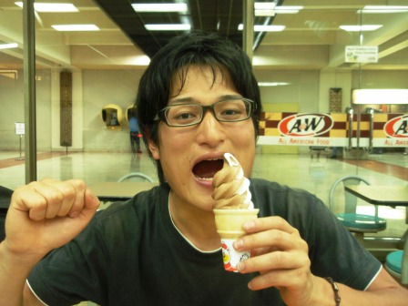

7日目～新たなる仲間、KEN～

ジャカルタへ戻る飛行機は夕方発なので、まずインストラクターさんのご自宅に伺って昨日サテアヤンパーティーに行けなかったこと謝ろうとした。これは、インストラクターさんが海に潜ってイカなどを捕るときに用いる銛である。取り付けられたゴムを思いきり引っ張って金具に引っ掛ける。引き金を引くと、ものすごい勢いで金針が飛んでいくという仕組み。

その後、スンギギの海岸へ出てみた。海の色は青く、波は穏やか。そして、今日も強烈な日差しが降り注ぐ。

ビーチを歩いていると、コマを売っているおじさんに呼び止められた。手作りのコマで、横にあけられた穴の効果で勢いよくまわすとポーッという音が鳴るのだ。大井は値切ってこれを2個購入。

まだまだ時間があるので、ダイビングの疲れを癒し、焼けた肌をいたわるためマッサージ屋に行った。値段は1時間の全身マッサージで750円。驚くような安さである。ここでちょっとしたハプニングが起きてしまったため、大井は放心状態のまま沖を眺めていた。

昼飯を食べに再びワルンへ。ここで、子供好きな大井は女の子とコマで遊んでいた。そして、最終的にコマを一個女の子にあげてしまった。最初は貸してあげるだけのつもりだったのだが、女の子はもらったものと喜んでいたようだ。人のいい大井は、返してくれということもなく笑顔で女の子を見つめていた。


時間はかなり早かったけれども、タクシーでマタラムの空港に向かった。ジャカルタからここへ来たときは夜だったことに加え、早々とタクシーに乗ってしまったので空港の様子はよく分からなかったが、かなりこじんまりとした飛行場で、周りが市街地ということもあってかなりのどかな雰囲気がただよっていた。

相当時間があまっていたので周囲を散策。特に見どころはなかったが、YAMAHAのバイクショップの前でアルバイト店員が声をかけてきた。マタラム大学の学生だそうで、工学部に在籍しているということだった。英語も流暢に話し、見るからに賢そうな青年だった。インドネシアの人たちはたいてい、英語を話すときにインドネシア語読みのように話す。たとえば、Air(エァ)は、アイルという発音をする。

セキュリティチェックを行い、出発ロビーへ。インドネシアでは、空港券に施設使用料などが含まれていない。そのため、空港の窓口で直接お金を支払う必要がある。これがそこそこ高く、マタラムの空港では350円程度支払わねばならない。

これが航空券。右上の青い紙が施設使用料を支払った証明である。全体的に、かなりお粗末な紙切れだ。



行きのバタビア航空と違い、ライオン航空はきっかり時間通りにアナウンスが入った。列に並んでチケットを見せて建物を出ると、そのまま滑走路に出た。セントレアやジャカルタの空港とはえらい違いだ。乗客はそのまま歩いて飛行機に向かい、階段で搭乗する。

機内へ乗り込む。空調もしっかり効いており、機体も割と新しいように見える。バタビアよりも安いのに、なかなかライオン航空はやるではないか(笑)そして、バタビアでもそうだったが、アテンダントさんはとてもスタイルがよく、美人揃い。特にライオン航空の場合、チャイナドレスの柄をインドネシアっぽくしたような制服で、大胆に太ももまであけられたスリットからは生足がのぞいておりかなりセクシーだった。なにしろバタビア航空の場合、ホームページのアテンダント募集欄に、採用の条件のトップにまず「ナイスルックス」、次に「ナイススタイル」、3番目にようやく「英語が話せること」が来るのである。しかも、20歳から30歳という条件付きだ。日本だったらこのあからさまな差別は問題になりそうだ。女好きなインドネシアのサラリーマンたちは、アテンダントさんで航空会社を選んでいるのかもしれない。

ジャカルタへ到着。日本から来た時と違って、あまり蒸し暑さを感じなかった。だいぶ暑さにもなれたみたいだ。

機内預け荷物を待っている際、トイレに行ってみると小便器の前に水槽があり、金魚が泳いでいた。

KENの到着を待つため、国際線ターミナルへ移動。まずレンタカー会社の人に電話をし、合流。友人の便を告げ、それまで待ってもらうことになった。時間をつぶすため、再びA＆Wへ。

現地の人のように、こんなものを用意してKENの到着を待った。

KENが到着。僕たちと同じように、香港を経由してキャセイパシフィック航空でやってきた。つい昨日まで研究に追われていたという。

レンタカー会社の人にホテルまで送ってもらうことになったはいいが、あいにくもうすでに満室になっているところが多く、5件目くらいでようやく開いているホテルが見つかった。お値段は少し高めで、3人で2600円ほど。しかし温水シャワーがついていたり、室内は文句なし。テレビもあった。明日はスマトラに上陸だ。
翌日へ